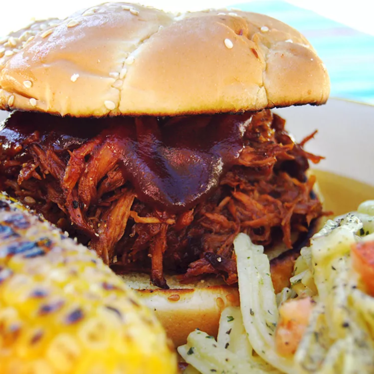

Slow Cooker Texas Pulled Pork

Ingredients
- 1 teaspoon vegetable oil
- 1 (4 pound) pork shoulder roast
- 1 cup barbeque sauce
- 1½ cup apple cider vinegar
- ½ cup chicken broth
- ¼ cup light brown sugar
- 1 tablespoon prepared yellow mustard
- 1 tablespoon Worcestershire sauce
- 1 tablespoon chili powder
- 1 extra large onion, chopped
- 2 large cloves garlic, crushed
- 1 ½ teaspoons dried thyme
- 8 hamburger buns, split
- 2 tablespoons butter, or as needed
Directions
-
Step 1
Pour vegetable oil into the bottom of a slow cooker. Place pork roast into the slow cooker; pour in barbeque sauce, vinegar, and chicken broth. Stir in brown sugar, yellow mustard, Worcestershire sauce, chili powder, onion, garlic, and thyme. Cover and cook on Low for 10 to 12 hours or High for 5 to 6 hours until pork shreds easily with a fork.
-
Step 2
Remove pork from the slow cooker, and shred the meat using two forks. Return shredded pork to the slow cooker, and stir to combine with juices.
-
Step 3
Spread the inside of both halves of hamburger buns with butter. Toast buns, butter-side down, in a skillet over medium heat until golden brown. Spoon pulled pork into toasted buns.